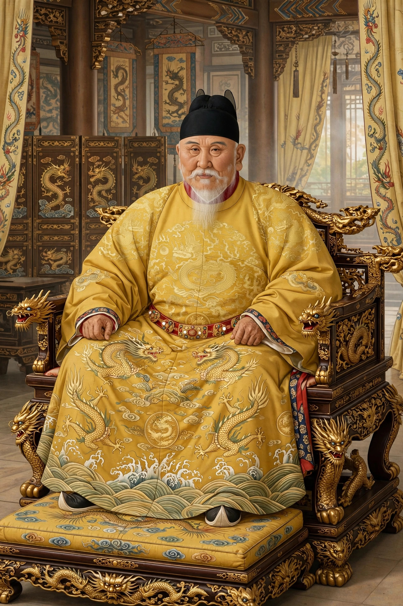

| Zhu Yuanzhang Hongwu Emperor | |
|---|---|
 | |
| Emperor of China | 23 January 1368 – 24 June 1398 |
| Born | 21 October 1328, Zhongli, Haozhou (now Fengyang, Anhui) |
| Died | 24 June 1398 (aged 69), Nanjing |
| Burial | Ming Xiaoling Mausoleum, Nanjing |
| Spouse | Empress Ma (Xiaocigao) |
| Issue | Zhu Biao; Zhu Di (Yongle Emperor); 24 other sons |
| Era name | Hongwu (1368–1398) |
| House | Zhu (Ming dynasty) |
Zhu Yuanzhang (Chinese: 朱元璋; 21 October 1328 – 24 June 1398), courtesy name Guorui, was the founder and first emperor of the Ming dynasty of China, reigning from 1368 to 1398 under the era name Hongwu, by which he is most commonly known.
Born into a desperately poor peasant family in present-day Anhui province during the Mongol-led Yuan dynasty, Zhu was orphaned as a teenager and spent time as a novice Buddhist monk before joining the Red Turban rebellion. He rose through the rebel ranks, captured Nanjing in 1356, defeated his rivals for control of southern China, and in 1368 proclaimed the Ming dynasty, driving the Yuan court from China proper. His reign was marked by sweeping land and fiscal reforms, the abolition of the chancellorship, and notorious political purges.
Zhu Yuanzhang was born in the village of Zhongli in Haozhou, in what is now Fengyang County, Anhui. His family were destitute tenant farmers. In 1344, famine and epidemic devastated the region: his father, elder brother, and mother died within a short period, and the destitute Zhu entered the Huangjue Temple as a novice monk. When the temple could no longer feed its monks, he spent several years wandering as a mendicant before returning to monastic life.
In 1352, after the Yuan authorities destroyed his temple on suspicion of rebel sympathies, Zhu joined the Red Turban rebels led by Guo Zixing. His ability quickly won him promotion, and he married Guo's adopted daughter, Ma Xiuying, the future Empress Ma. After Guo's death Zhu emerged as a leading rebel commander. He seized Nanjing in 1356 and made it his base. At the Battle of Lake Poyang in 1363 he destroyed the much larger fleet of his rival Chen Youliang, and by 1367 he had eliminated Zhang Shicheng, unifying the south. On 23 January 1368 he declared himself emperor and founded the Ming dynasty, choosing Hongwu ("Vastly Martial") as his era name. Ming forces captured the Yuan capital of Khanbaliq (Beijing) later that year, and the Yuan emperor fled to the steppe.
As emperor, Zhu rebuilt China's agrarian economy after decades of war and Mongol rule. His government conducted empire-wide land surveys recorded in "fish-scale registers", compiled household records in the Yellow Registers, and organised rural society through the lijia system of communal tax and labour units. He planted trees, restored irrigation, resettled farmers on abandoned land, and kept taxes light, though the state he built was intensely interventionist.
Distrustful of officials, Zhu abolished the office of Chancellor in 1380 following the alleged plot of Chancellor Hu Weiyong, concentrating power in his own hands — a structural change that burdened later emperors. The ensuing purge, and later cases such as the Lan Yu case of 1393, cost the lives of tens of thousands of officials and their families. The Jinyiwei (Embroidered Uniform Guard) served as his secret police. He issued the Da Ming Lü (Great Ming Code) and the didactic Ancestral Injunctions, and enfeoffed his many sons as princes along the frontiers.
The Hongwu Emperor died on 24 June 1398 and was buried in the Ming Xiaoling Mausoleum on Purple Mountain, Nanjing. Because his eldest son, Zhu Biao, had died in 1392, he was succeeded by his grandson, the Jianwen Emperor — whose reign was cut short by the usurpation of Zhu's fourth son, Zhu Di, the Yongle Emperor.
Historians judge the Hongwu Emperor a paradoxical figure: a ruler of humble origin who restored Chinese rule, stabilised the economy, and founded a dynasty lasting nearly three centuries, yet whose suspicion, purges, and use of extrajudicial punishment set a pattern of imperial autocracy and terror within the Ming court.
See also: Ming dynasty · Yongle Emperor · Red Turban Rebellions